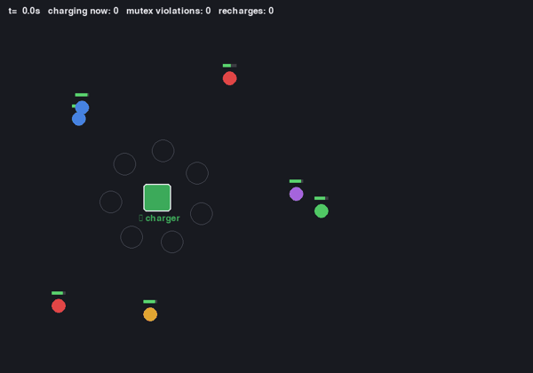

Shared Charging Station
Resource: charging station · capacity 1N robots keep working until their battery runs low. During every low-battery episode a robot requests the shared charger, drives to it, and charges once it holds exclusive access — the arbiter guarantees fair, mutually-exclusive service so no robot is ever left waiting forever.
Full requirement spec (charger.yaml)
- Each robot works. During every low-battery episode it requests the shared charger, drives to it, and charges once access and the charger location are available.
- A robot must hold the charging station's exclusive access before it starts charging.
- At most one robot may charge at the station at a time.
- A robot can charge only while it is at the charging station.
- A robot drives to the charger only while it is requesting and its battery remains low.
- If a robot remains low-battery, is still requesting, and is not at the charger, it keeps driving back until it arrives; once arrived while still requesting, it is not displaced before grant.
- The arbiter provides fair exclusive access: every request that remains asserted is eventually granted, and a grant persists only while the matching request persists.
- Robot count N is varied across 3, 5 and 7 to test how the certificate ladder and synthesis scale with team size.

N = 3

N = 5

N = 7